Part and PartDesign/bg
Общ преглед
През годините имаше много дискусии за разликите и последиците от използването на работна маса Част  Part и Дизайн на части
Part и Дизайн на части  PartDesign.
PartDesign.
Добра идея е да използвате едната или другата, докато потребителят се почувства комфортно с едната, след което да научи другата. Също така обикновено се препоръчва новите потребители да не ги смесват, докато не бъдат разбрани последиците от това.
Да поговорим за тези последици.
Концепции в работна маса Част (Part)
Работна маса Част е по същество CSG стил моделиране. Операторът комбинира различни примитиви, за да завърши с получаване на желаната форма. (Всъщност, работната маса Част отива една стъпка по-далеч от просто примитиви и позволява на оператора да използва скица + extrude (или скица + revolve, loft, sweep ...), за да създаде и персонализирани форми.) Когато всеки примитив или форма е създаден, той няма връзка с други създадени обекти (с изключение на скици и техните препратки), това е едно единствено твърдо тяло.
{kind=link}
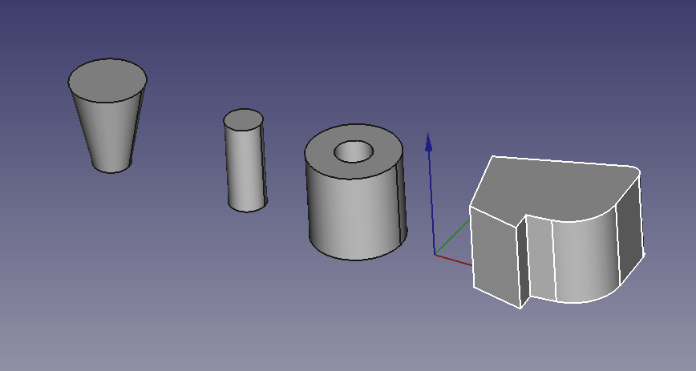
Това остава така, докато операторът не използва някаква операция, за да ги комбинира (обикновено булева, което ги обединява или изважда). Всяко първоначално твърдо тяло остава достъпно отделно и операцията създава нов обект.
The take away is the single solitary solid bit and the combining them bit.
Концепции в работна маса Дизайн на част (PartDesign)
В работната маса PartDesign обектът на тялото е конструиран директно като едно единствено кумулативно твърдо тяло.
The 1st step in a body must be a block of material, either from an additive primitive or an extrusion from a sketch, or an imported shape (then called Base Feature).
This initial block of material will be changed sequentially until the desired final shape (solid) is obtained.
It is cumulative in the sense that each operation adds or removes material.
By default, the "tip" of the body - unless there is a voluntary change in the visualization of a particular feature - is the last operation performed on the body. This is the current and visible state of the body, ready to be changed again by new feature.
Any function under the body represents the cumulative shape of the solid from the 1st feature to the feature considered.
So to have the complete solid, on the one hand the Tip feature must be the last stage of the construction of this solid, and on the other hand it is the body which must be selected and not a stage of its construction.
This will make it possible, in the event of a modification, to always have the last version of the solid represented.
Note and additions : At each time of the construction, the last function used is the "Tip", which can be defined too as "active stage in the construction of the object" or "stage preceding the next action in the construction of the object". When the object's drawing is complete, Tip is naturally the last stage or feature of the construction. But if desired, in case of forgetting, any feature of the construction can be provisionally declared as Tip: it then becomes the step preceding the next action in the construction of the object, which means that new feature(s) can be inserted anywhere in the construction, on the condition that no incompatibilities are created with the suite.
When everything is finished, you have to redeclare the last feature as Tip, which corresponds to the finished object.
{kind=link}
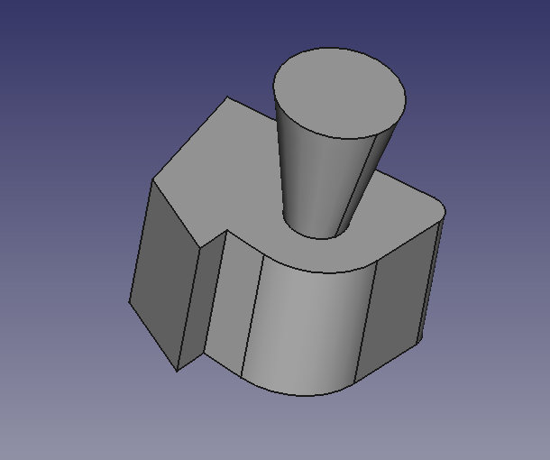
This image shows a Body. It is a cumulative solid that consists of a padded sketch and a cone primitive. This is a single solid.
If Tip on Pad, the pad can exist separately, but if Tip on Cone, the cone cannot exist separately (Tip on cone = pad + cone).
(Another thing mentioned often is a Body MUST be a single contiguous solid. This means all geometry created by a feature in the Body must touch its predecessor.)
The Ramifications
Although not recommended for newcomers, it is possible to combine tools from Part workbench and PartDesign workbench, provided you know what you are doing. For example :
People get caught when they attempt to use some feature under the Body (rather than the Body itself) as one selection of a Part Workbench Boolean operation. This is a problem, because the selected feature does not represent THE complete solid.
In a sense, from a Part Workbench standpoint, the Body represents another primitive. So, using a Body (remember it is a proxy for the tip) and a Part Workbench object to do a Boolean is valid. But the resulting object is a Part Workbench object. And, thus PartDesign Workbench tools can't be used on it any longer.
And, it can get even more complicated. If you create a new Body and drag the result from the previous paragraph into it, a BaseObject is created. And you can go off and use the PartDesign Workbench tools on it.
The Caveats
There is a caveat with the Tip and its representation of the single solid in the Body. If the tip is a subtractive feature and is used in a dress up operation, for instance a Mirror, the Mirror is operating on the underlying feature (a pocket for example). Thus the cumulative solid is not mirrored, but the subtractive feature is. The result of this must create a single solid.
In this example, a mirror of the tip (which is the pocket of the slot) around any of the base planes, or even a face of the solid will not produce a mirrored solid of the entire model. (In fact, it will produce a Mirrored feature in the tree that is essentially empty.)
{kind=link}
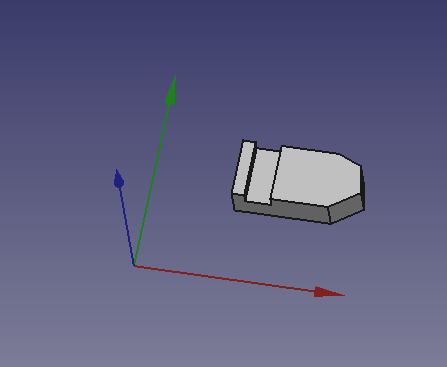
In this example, a mirror of the tip (which is the pocket of the slot) is performed around the datum plane and produces a mirrored slot:
{kind=link}
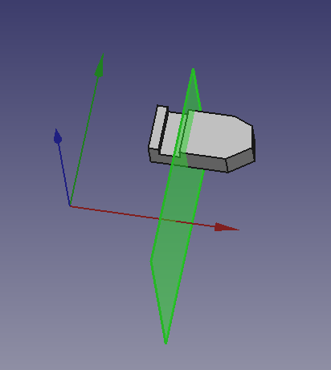
See the  PartDesign Mirrored tool wiki page for more information.
PartDesign Mirrored tool wiki page for more information.
Comparison
This paragraph demonstrates how it's possible to create the same model using each of the workbenches. Note that some steps are missing from the PartDesign column in the table, since many of its tools automatically perform Boolean operations.
{kind=link}
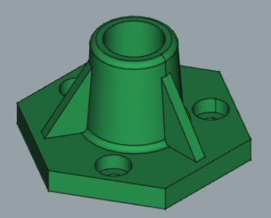
| In |
In |
|---|---|
| 01- |
01- |
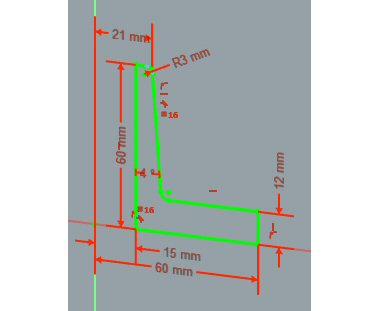 |
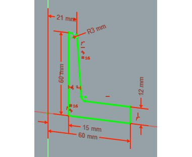 |
{kind=link}
{kind=link}
| 02- |
02- |
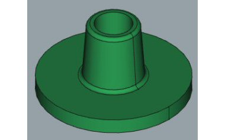 |
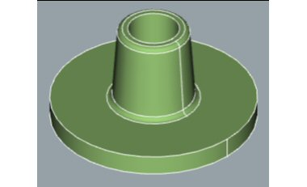 |
{kind=link}
{kind=link}
| 03- |
03- |
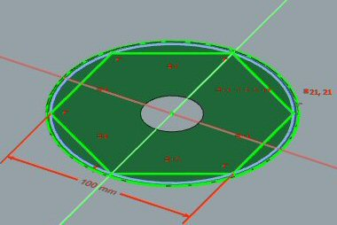 |
|
{kind=link}
| 04- |
04a- |
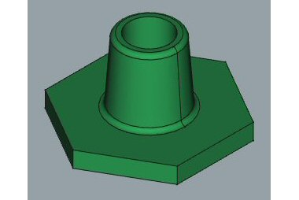 |
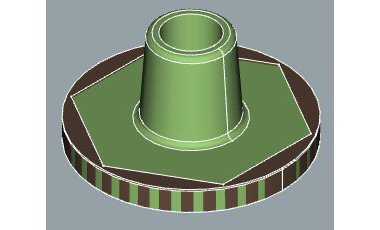 |
{kind=link}
{kind=link}
| 04b- | |
|
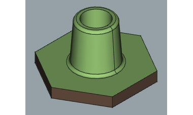 |
{kind=link}
{kind=link}
| 05- |
05- |
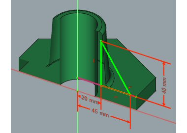 |
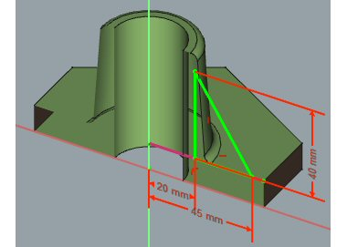 |
{kind=link}
{kind=link}
| 06- |
06a- |
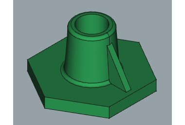 |
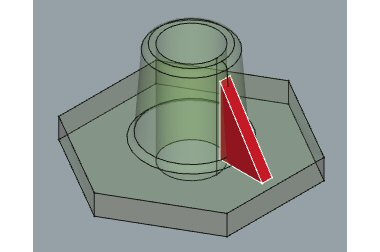 |
{kind=link}
{kind=link}
| 06b- | |
|
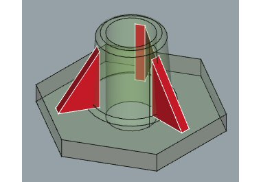 |
{kind=link}
| 06c- | |
|
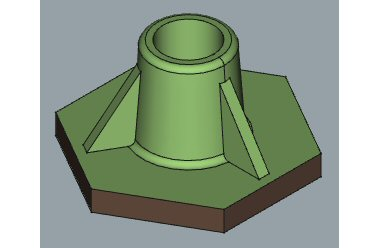 |
{kind=link}
| 07- |
07- |
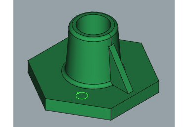 |
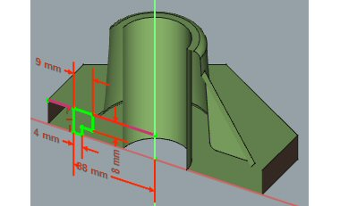 |
{kind=link}
{kind=link}
| 08- |
08a- |
|
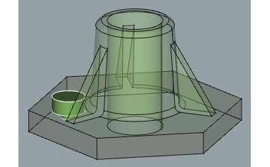 |
{kind=link}
{kind=link}
| 08b- | |
|
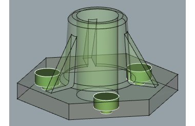 |
{kind=link}
| 09- |
09- |
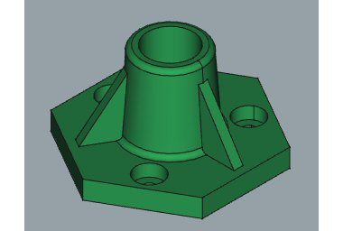 |
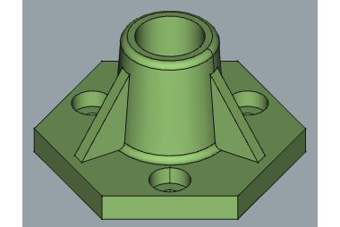 |
{kind=link}
{kind=link}
The resulting Tree Views are quite different. See the images below. The texts in red refer to the steps in the table.
| 10- Tree View in PartDesign workbench | 10- Tree View in Part workbench |
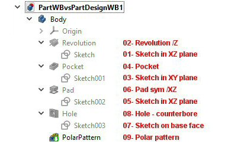 |
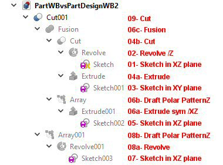 |
{kind=link}
{kind=link}
Conclusion
Part and PartDesign workbenches can be used together with some care, creating quite complex models.
- Creation and modification: New Sketch, Extrude, Revolve, Mirror, Scale, Fillet, Chamfer, Face From Wires, Ruled Surface, Loft, Sweep, Section, Cross-Sections, 3D Offset, 2D Offset, Thickness, Project on Surface, Appearance per Face
- Boolean: Compound, Explode Compound, Compound Filter, Boolean Operation, Cut, Union, Intersection, Connect Shapes, Embed Shapes, Cutout Shape, Boolean Fragments, Slice Apart, Slice to Compound, Boolean XOR, Check Geometry, Defeaturing
- Other tools: Box Selection, Shape From Mesh, Points From Shape, Convert to Solid, Reverse Shapes, Simple Copy, Transformed Copy, Shape Element Copy, Refine Shape, Set Tolerance, Persistent Section Cut, Attachment
- Preferences: Preferences, Fine tuning
- Helper tools: New Body, New Sketch, Attach Sketch, Edit Sketch, Validate Sketch, Check Geometry, Sub-Shape Binder, Clone
- Modeling tools:
- Additive tools: Pad, Revolution, Additive Loft, Additive Pipe, Additive Helix, Additive Box, Additive Cylinder, Additive Sphere, Additive Cone, Additive Ellipsoid, Additive Torus, Additive Prism, Additive Wedge
- Subtractive tools: Pocket, Hole, Groove, Subtractive Loft, Subtractive Pipe, Subtractive Helix, Subtractive Box, Subtractive Cylinder, Subtractive Sphere, Subtractive Cone, Subtractive Ellipsoid, Subtractive Torus, Subtractive Prism, Subtractive Wedge
- Boolean: Boolean Operation
- Dress-up tools: Fillet, Chamfer, Draft, Thickness
- Transformation tools: Mirror, Linear Pattern, Polar Pattern, Multi-Transform, Scale
- Additional tools: Shape Binder, Involute Gear, Sprocket, Shaft Design Wizard
- Context menu: Suppressed, Set Tip, Move Object To…, Move Feature After…
- Preferences: Preferences, Fine tuning
- General: New Sketch, Edit Sketch, Attach Sketch, Reorient Sketch, Validate Sketch, Merge Sketches, Mirror Sketch, Leave Sketch, Align View to Sketch, Toggle Section View, Stop Operation, Grid, Snap, Rendering Order
- Geometries: Point, Polyline, Line, Arc From Center, Arc From 3 Points, Elliptical Arc, Hyperbolic Arc, Parabolic Arc, Circle From Center, Circle From 3 Points, Ellipse From Center, Ellipse From 3 Points, Rectangle, Centered Rectangle, Rounded Rectangle, Triangle, Square, Pentagon, Hexagon, Heptagon, Octagon, Polygon, Slot, Arc Slot, B-Spline, Periodic B-Spline, B-Spline From Knots, Periodic B-Spline From Knots, Toggle Construction Geometry
- Constraints:
- Dimensional Constraints: Dimension, Horizontal Dimension, Vertical Dimension, Distance Dimension, Radius/Diameter Dimension, Radius Dimension, Diameter Dimension, Angle Dimension, Lock Position
- Geometric Constraints: Coincident Constraint (Unified), Coincident Constraint, Point-On-Object Constraint, Horizontal/Vertical Constraint, Horizontal Constraint, Vertical Constraint, Parallel Constraint, Perpendicular Constraint, Tangent/Collinear Constraint, Equal Constraint, Symmetric Constraint, Block Constraint, Refraction Constraint
- Constraint Tools: Toggle Driving/Reference Constraints, Toggle Constraints
- Sketcher Tools: Fillet, Chamfer, Trim Edge, Split Edge, Extend Edge, External Projection, External Intersection, Carbon Copy, Select Origin, Select Horizontal Axis, Select Vertical Axis, Move/Array Transform, Rotate/Polar Transform, Scale, Offset, Mirror, Remove Axes Alignment, Delete All Geometry, Delete All Constraints, Copy Elements, Cut Elements, Paste Elements
- B-Spline Tools: Geometry to B-Spline, Increase B-Spline Degree, Decrease B-Spline Degree, Increase Knot Multiplicity, Decrease Knot Multiplicity, Insert Knot, Join Curves
- Visual Helpers: Select Under-Constrained Elements, Select Associated Constraints, Select Associated Geometry, Select Redundant Constraints, Select Conflicting Constraints, Toggle Circular Helper for Arcs, Toggle B-Spline Degree, Toggle B-Spline Control Polygon, Toggle B-Spline Curvature Comb, Toggle B-Spline Knot Multiplicity, Toggle B-Spline Control Point Weight, Toggle Internal Geometry, Switch Virtual Space
- Additional: Sketcher Dialog, Preferences, Sketcher scripting
- Getting started
- Installation: Download, Windows, Linux, Mac, Additional components, Docker, AppImage, Ubuntu Snap
- Basics: About FreeCAD, Interface, Mouse navigation, Selection methods, Object name, Preferences, Workbenches, Document structure, Properties, Help FreeCAD, Donate
- Help: Tutorials, Video tutorials
- Workbenches: Std Base, Assembly, BIM, CAM, Draft, FEM, Inspection, Material, Mesh, OpenSCAD, Part, PartDesign, Points, Reverse Engineering, Robot, Sketcher, Spreadsheet, Surface, TechDraw, Test Framework
- Hubs: User hub, Power users hub, Developer hub